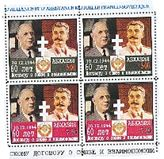

En 1943, pour les trois grands alliés, la Grande Bretagne, les Etats-Unis et l’Union Soviétique, la France est sortie de l’Histoire. Le prestige qu’elle avait acquis en ayant été le principal acteur de la victoire sur l’Allemagne en 1918, a disparu. Son armée, dont on disait qu’elle était la première du monde est balayée par l’armée allemande en 1940. Mal commandées et mal préparées, l’armée française subit une des défaites les plus humiliante de son Histoire. Le destin de la France n’est plus entre ses mains, mais entre celles de l’Allemagne, qui collabore désormais, avec le Maréchal Pétain, un vieillard couvert de gloire et Pierre Laval, homme politique de gauche et ancien député socialiste. Comble du déshonneur, le même Pierre Laval finira par déclarer, le 22 juin 1942, qu’il souhaite la victoire de l’Allemagne.
Le 7 mai 1945, à 2h41, le maréchal allemand Alfred Jodl signe à Reims la reddition sans condition de l’armée allemande. Staline exigeant que la capitulation allemande se fasse à Berlin, au cœur du Troisième Reich, une nouvelle signature a lieu le dans la ville occupée par les Soviétiques en présence de représentants de l’URSS, de la Grande-Bretagne, de la France et des Etats-Unis.
Pourtant, le 9 mai 1945, la France fait partie des vainqueurs et signe la capitulation avec les trois grands à Reims et à Berlin. Elle obtient un siège de membre permanent à l’ONU. Ce redressement, la France le doit à un homme, le général De Gaulle, qui en s’appuyant alternativement sur l’Union Soviétique et sur l’Angleterre, a redonné à la France, sa place sur la scène internationale. Nous allons tâcher de comprendre comment cela a pu être possible.
1. La « France Libre » de 1940 à la conférence de Téhéran
Nous savons, grâce aux archives du « Kominterm », que dès la fin de l’année 1940, les soviétiques sont conscients de l’influence grandissante du mouvement gaulliste, au sein de la population française. Après l’entrée en guerre de l’Allemagne contre la Russie, Moscou soutient désormais le général De Gaulle dans le cadre d’une politique d’Union sacrée contre l’envahisseur.
Le 1er juillet 1941, le général De Gaulle demande à l’ambassadeur Yvan Maïski, l’établissement de relations diplomatiques entre la « France libre » et l’URSS. La réponse positive arrive le 26 septembre 1941, le général De Gaulle est reconnu comme le « dirigeant de tous les Français libres » et le gouvernement soviétique se déclare « prêt à apporter un appui varié aux « Français libres ».
Les communistes français se méfient pourtant, de ce général, entouré des résistants de la première heure qui sont en majorité, des monarchistes, anciens membres de l’Action Française (mouvement monarchiste français). Le général De Gaulle investit énormément dans sa relation avec l’Union Soviétique. Au lendemain de la victoire des troupes soviétiques devant Moscou, à la fin de l’année 1941, il s’enthousiasme à la radio londonienne : « Il n’est pas de bon Français qui n’acclame la victoire de la Russie… La France qui souffre est avec la Russie qui souffre. La France qui combat est avec la Russie qui combat. La France, sombrée dans le désespoir, est avec la Russie qui sut remonter des ténèbres de l’abîme jusqu’au soleil de la grandeur. »
Dès le milieu de l’année 1942, le général De Gaulle demande à visiter Moscou, et souhaite avoir un représentant du Parti Communiste Français auprès de lui. Fin 1942, la collaboration entre les communistes et les gaullistes est officialisée par l’envoi par le « Komintern », d’un représentant du PCF, Fernand Grenier.
Le gouvernement soviétique évite d’inviter le général De Gaulle jusqu’à la fin 1943, car Staline ne veut pas compliquer sa relation avec les Anglo-Saxons. Ces derniers gardent leur distance avec le général jusqu’au milieu de l’année 1944.
Cette méfiance vis-à-vis du général De Gaulle, a pour conséquence qu’à l’issue de la conférence de Téhéran (28 novembre - 1er décembre 1943), la France est considérée comme un pays ennemi, par les trois chefs de l’alliance contre Hitler, Churchill, Roosevelt et Staline.
Charles E. BohlenLe diplomate américain Charles Bohlen, interprète de Roosevelt, résume ainsi la situation, à l’ambassadeur des Etats-Unis à Moscou, Harriman. « L’Allemagne sera et restera démembrée, les Etats d’Europe orientale, centrale et méridionale ne pourront pas se fédérer ou s’associer. La France perdra ses colonies et ses bases et n’aura pas le droit d’entretenir un système militaire digne de ce nom… Le résultat sera que l’URSS sera la seule puissance militaire et politique significative sur le continent européen. Le reste de l’Europe sera réduit à l’impuissance politique et militaire ».
2. Le tournant de l’automne 1944, le général De Gaulle face à Churchill et Staline
C’est la perspective pour l’Angleterre de se retrouver seule à gérer l’Allemagne démembrée et la nouvelle et unique puissance continentale soviétique, qui pousse Winston Churchill et réévaluer sa position sur la France et le général De Gaulle. Churchill ne veut pas se retrouver seul face à l’URSS lorsque les troupes américaines, tout le monde en est persuadé à l’époque, quitteront l’Allemagne.
C’est d’abord donc pour occuper l’Allemagne que Churchill redonne du pouvoir au général De Gaulle, et c’est ce qu’il lui explique d’ailleurs à Paris, le 11 novembre 1944. En février 1945 à Yalta, il finit par persuader ses deux homologues russe et américain, de la nécessité du retour de la France dans la grande politique européenne. Le pacte du 10 décembre 1944, ne manqua d’ailleurs pas d’agacer le brillant premier ministre britannique.
Le général De Gaulle croit toujours, en effet, à la nécessite de l’alliance franco-russe. Il y trouve depuis le début de la France libre, un contrepoids aux puissances anglo-saxonnes qui se méfient de lui.
Les soviétiques ont soutenu le général De Gaulle contre son rival, le général Giraud.
Le chef de la « France Libre » se rend à Moscou en décembre 1944, pour sa première rencontre avec Staline. Pourtant, malgré son aspect symbolique, ce voyage est un échec.
De Gaulle voulait l’aide de Staline pour préserver les intérêts de la France en Allemagne, c’est-à-dire contrôler la Ruhr, la Rhénanie et la Sarre et faire contrepoids aux anglo-saxons. Le général De Gaulle n’obtint satisfaction dans aucun de ces objectifs. Staline avait pour objectif de contrôler lui-même une Allemagne qu’il ne voulait pas diviser à ce moment.
Il ne souhaitait pas, en outre, contrarier les Anglo-Saxons en donnant trop d’importance à la France. Le général De Gaulle et Staline se mettent finalement d’accord sur la signature d’un pacte de sécurité, tourné contre l’Allemagne. Pour Staline, ce pacte est juste un moyen d’aligner la France sur sa politique étrangère, ce dont le général De Gaulle se rend compte rapidement
3. La France, de Yalta à la naissance de la guerre froide
Le 23 octobre 1944, les alliés reconnaissent le général De Gaulle comme le président provisoire de la République française. La position française est cependant encore précaire. La France n’est présente, ni à Yalta, ni à Postdam. Le retour de la France parmi les vainqueurs a donc lieu, non pas à Yalta mais à Berlin, le 9 mai et le 5 juin 1945, lors de la déclaration des Quatre. Cette déclaration devait mettre en place, un nouvel ordre européen démocratique, qui devait être géré par des réunions régulières des ministres des Affaires Etrangères, la CMAE (conférence des MAE). Ce système sera écarté par celui des deux blocs. La France obtient également un siège permanent au sein du conseil de sécurité de l’ONU.
Déçu et inquiet, en raison des ambitions de Staline, le général De Gaulle se rend à Washington en août 1945. Il espère contrebalancer la puissance de l’URSS en Europe, grâce à l’appui des Etats-Unis. Il est également inquiet de la résurgence d’une Allemagne unie, qui présenterait de nouveau un danger pour l’Europe.
Le voyage du général De Gaulle se passe bien, mais Washington ne perçoit pas à cette époque, l’URSS comme un danger en Europe.
A l’été 1945, il se consacre donc, à un nouveau projet qui vise à réunir autour de la France, les Pays-Bas, le Luxembourg, la Belgique et les régions occidentales de l’Allemagne. Staline comprend les intentions du général De Gaulle, et lance le parti communiste dans une opposition frontale, qui aboutit à son départ en janvier 1946.
Conclusion
Le général De Gaulle a posé les bases de ce que doit être la politique étrangère de la France. L’ordre européen issu de Yalta ne s’y prêtait pas en 1946. Lors de son retour aux affaires en 1958, le général De Gaulle reprit cette politique d’équilibre et d’indépendance, notamment, vis-à-vis des Etats-Unis, dont l’ingérence dans les affaires de la France nuisait à sa souveraineté. La sortie du commandement de l’OTAN, la fermeture des bases américaines sur notre sol et l’abandon du dollar pour l’étalon or, lui valurent le déclanchement de la première révolution colorée en Europe, en mai 1968.
Les principes qu’a posé le général de Gaulle, de souveraineté et d’équilibre européen sont toujours valables aujourd’hui, surtout avec la retour d’une Allemagne, renouant avec ses vieux démons impérialistes. La vision d’une Europe pacifiée autour d’un axe franco-russe est, à mon sens, la seule raisonnable. Je laisserais donc les derniers mots de conclusion au général De Gaulle. Il les prononça en janvier 1942 après la victoire soviétique devant Moscou : « Pour le malheur général, trop souvent depuis des siècles l’alliance franco-russe fut empêchée ou contrecarrée par l’intrigue ou l’incompréhension. Elle n’en demeure pas moins une nécessité que l’on voit apparaître à chaque tournant de l’Histoire. »
Partager cette page